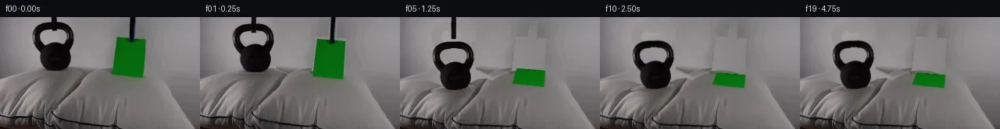

![首帧]()

Round 00
2026-11-05T20:23:15.395052+00:00像素候选变化代码 +218/−0inspection 更新
pixels a7bc04ff1ed34ed8 · code 6c46eb627a752830
查看本轮 generate.py 真实 diff
--- previous/generate.py
+++ current/generate.py
@@ -0,0 +1,218 @@
+"""Deterministic local pixel continuation of first_frame.png.
+Uses source cutouts, polynomial/background inpainting, cloth displacement and
+projective paper motion. No generative model, external assets or renderer.
+"""
+from pathlib import Path
+import json
+import numpy as np
+import cv2
+from PIL import Image, ImageDraw
+from scipy.ndimage import gaussian_filter, map_coordinates
+from artifact_io import save
+
+ROOT = Path(__file__).resolve().parent
+W,H=256,144
+src=np.asarray(Image.open(ROOT/'first_frame.png').convert('RGB')).astype(np.float32)
+yy,xx=np.mgrid[:H,:W].astype(np.float32)
+
+# Measured silhouette. Separate support from kettle and leave the handle hollow.
+gray=cv2.cvtColor(src.astype(np.uint8),cv2.COLOR_RGB2GRAY).astype(np.float32)
+bell_region=((xx>=40)&(xx<=95)&(yy>=5)&(yy<=70))
+bell_mask=np.clip((142-gray)/12,0,1)*bell_region
+bell_mask[yy<6]=0
+# Fill the tiny support tip in the open handle, while keeping the top arch.
+bell_mask[(xx>=65)&(xx<=72)&(yy>=15)&(yy<=19)]=0
+# Retain highlight pixels in the edge that has dark neighbors.
+closed=cv2.morphologyEx((bell_mask>.3).astype(np.uint8),cv2.MORPH_CLOSE,np.ones((3,3),np.uint8))
+# Only close small discontinuities, not the hollow handle.
+bell_mask=np.maximum(bell_mask,closed.astype(np.float32)*bell_region)
+bell_mask[(xx>=65)&(xx<=72)&(yy>=15)&(yy<=19)]=0
+
+paper_corners=np.float32([[150,26],[186,29],[183,78],[144,74]])
+hi=4
+paper_mask_hi=np.zeros((H*hi,W*hi),np.uint8)
+cv2.fillConvexPoly(paper_mask_hi,np.round(paper_corners*hi).astype(np.int32),255)
+paper_mask=cv2.resize(paper_mask_hi,(W,H),interpolation=cv2.INTER_AREA).astype(np.float32)/255
+# The gray wall is kept through every unchanged source pixel.
+rod_mask=np.zeros((H,W),np.uint8)
+cv2.rectangle(rod_mask,(64,0),(72,18),255,-1)
+cv2.fillConvexPoly(rod_mask,np.int32([[166,0],[174,0],[173,33],[165,33]]),255)
+removed=np.uint8((bell_mask>.01)|(paper_mask>.01))*255
+removed=np.maximum(removed,rod_mask)
+removed=cv2.dilate(removed,np.ones((3,3),np.uint8))
+
+# Top contour of the original pillow, inferred across the occluded spans.
+contour_x=np.array([0,15,30,43,56,70,84,98,110,118,130,141,153,168,180,190,201,211,222,234,245,255])
+contour_y=np.array([81,77,72,68,66,65,65,67,72,77,72,69,68,69,73,80,90,102,119,136,150,161])
+ridge=np.interp(np.arange(W),contour_x,contour_y).astype(np.float32)
+wall_visible=(yy<ridge[None,:]-3)&(removed==0)
+xn=(xx-128)/128;yn=(yy-60)/90
+terms=[np.ones_like(xx),xn,yn,xn*xn,xn*yn,yn*yn,xn**3,xn*xn*yn,xn*yn*yn,yn**3]
+A=np.stack(terms,axis=-1)
+fit=np.linalg.lstsq(A[wall_visible],src[wall_visible],rcond=None)[0]
+wall_model=np.clip(A@fit,0,255).astype(np.float32)
+# Inpainting is used only for the narrow original occlusions in the cloth.
+inpaint=cv2.inpaint(src.astype(np.uint8),removed,5,cv2.INPAINT_NS).astype(np.float32)
+clean=src.copy()
+fill_weight=np.clip((ridge[None,:]-yy)/3,0,1)[...,None]
+fill=inpaint*(1-fill_weight)+wall_model*fill_weight
+clean[removed>0]=fill[removed>0]
+# Smooth the reconstructed wall residual to avoid visible fill boundaries.
+wall_under=src.copy()
+wall_under[removed>0]=wall_model[removed>0]
+# Extend the wall downward into the region revealed by pillow compression.
+wall_alpha=np.clip((yy-ridge[None,:]+2)/4,0,1)[...,None]
+wall_under=wall_under*(1-wall_alpha)+wall_model*wall_alpha
+
+# Unpremultiply source object edge pixels against the local wall/pillow.
+bell_rgb=src.copy()
+a=bell_mask[...,None]
+# Edge color correction removes a faint source-background fringe after moving.
+bell_rgb=np.where(a>.015,(src-clean*(1-a))/np.maximum(a,.015),0)
+bell_rgb=np.clip(bell_rgb,0,255)
+# Complete the black handle arch behind its removed support tip.
+for y in range(6,15):
+ for x in range(65,73):
+ if bell_mask[y,x]>.5:
+ bell_rgb[y,x]=(src[y,61]+src[y,75])/2
+bell_pre=bell_rgb*bell_mask[...,None]
+
+# Paper color/texture comes only from the source; reconstruct where the clip hides it.
+paper_rgb=src.copy()
+green_sel=(paper_mask>.8)&(src[:,:,1]>src[:,:,0]*1.45)&(src[:,:,1]>src[:,:,2]*1.3)
+pa=np.stack([np.ones_like(xx),xx/256,yy/144],axis=-1)
+green_fit=np.linalg.lstsq(pa[green_sel],src[green_sel],rcond=None)[0]
+green_model=pa@green_fit
+bad=(paper_mask>.0)&(~green_sel)
+paper_rgb[bad]=green_model[bad]
… diff truncated; 131 more lines …